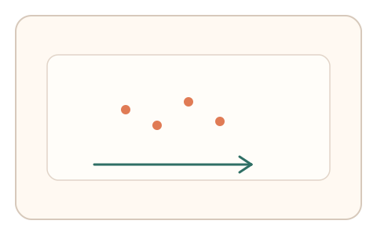
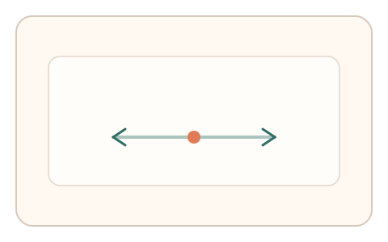
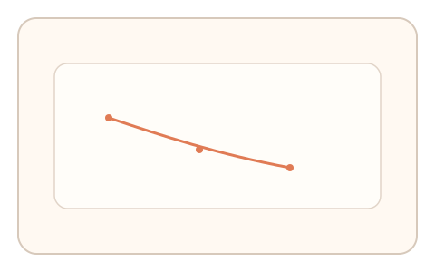

#126
D：单底座 × 单信号 × 自适应/短序列（视觉时域）
已扩展
运动后效中性滑杆
运动适应后调节反向速度到主观静止，记录中性点曲线与调整过程。
概念原文
运动适应后让用户调节反向运动速度到“感觉静止”，连续两轮记录适应曲线并做异常检测。
以主观中性点的适应轨迹作为验证特征。
研究背景
运动后效使静止刺激出现反向运动知觉，中性点会随适应衰减变化。该适应轨迹具有个体差异。
核心机制
- 显示单向运动刺激进行适应。
- 切换到可调反向运动滑杆。
- 用户调节到“感觉静止”并重复两轮。
- 记录中性点与调整动态。
用户流程
- 步骤 1：用户观看运动适应刺激。
- 步骤 2：拖动滑杆调到主观静止。
- 步骤 3：重复一轮并记录中性点变化。
判定信号
中性点速度偏移
中性点反映运动后效强度。
调整轨迹与回拉
真实用户会出现微调与延迟。
判定逻辑
中性点需随轮次衰减且调整轨迹具微调特征；瞬时归零判异常。
对抗面
- 脚本固定设置零速度
- 重放历史中性点轨迹
防御与缓解
- 随机化方向、点密度与速度
- 改变适应时长与间隔
- 叠加反应时/路径信号
可达性与风险
提供更慢速度与缩短适应时长，减少眩晕。
- 低帧率影响速度感知
- 部分用户易产生眩晕
可视化状态

状态 1：运动适应
点阵沿单向运动形成适应。

状态 2：中性滑杆
调节反向速度到主观静止。

状态 3：中性点曲线
比较中性点随轮次变化。
参考资料
Motion aftereffect
说明运动适应与主观静止。
Motion perception
说明运动感知机制。